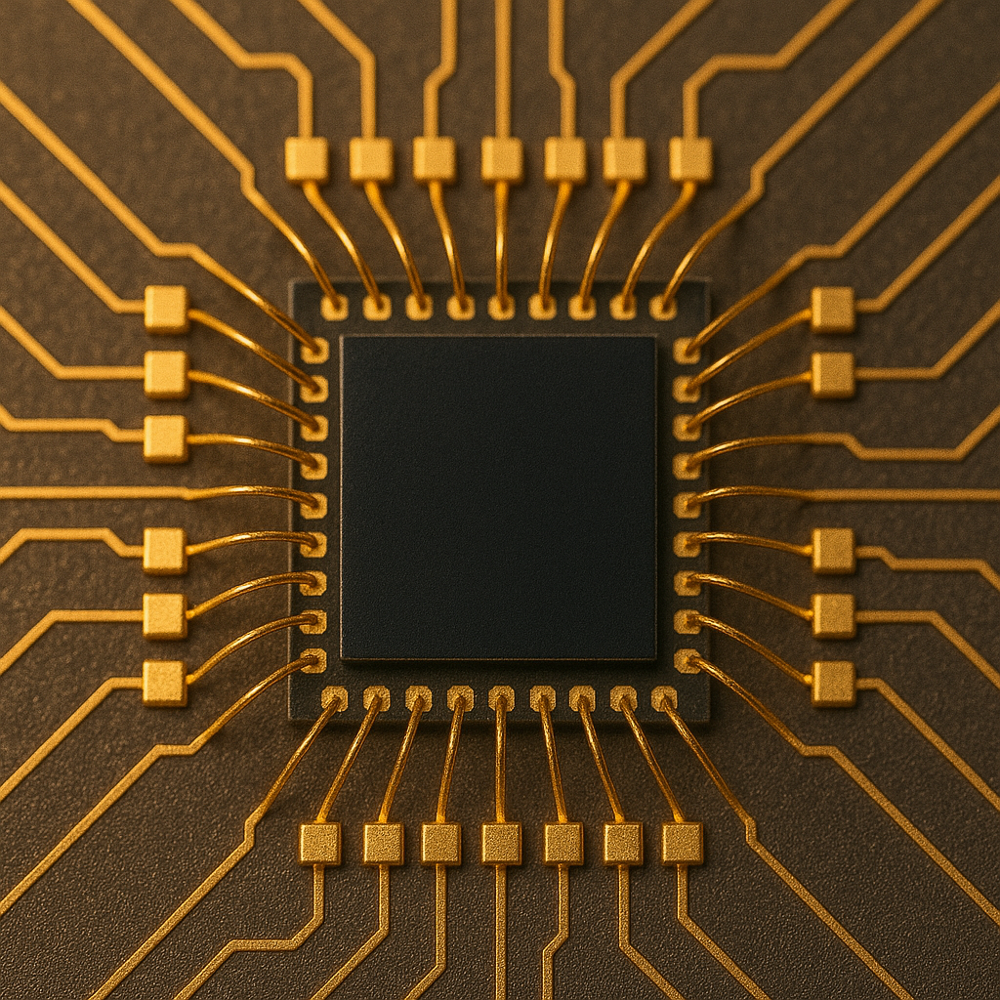

Quantum Processing
November 23, 2024 by Eobard Thawne

A quantum processing unit (QPU) is a powerful type of computer hardware that uses qubits, or quantum bits, instead of the regular bits found in normal computers. Qubits can be in more than one state at the same time, which means QPUs can look at many possibilities at once. This makes them especially good at handling problems that are too big or complex for regular processors to solve quickly.
Since they are the core of quantum computers, QPUs could make a big difference in areas that affect everyday life. They may help us better understand and fight climate change, speed up medicine and drug development, and even improve artificial intelligence (AI). In the future, QPUs could also play a role in making data more secure and in solving tough challenges in finance, energy, and logistics, opening the door to faster and smarter solutions worldwide.